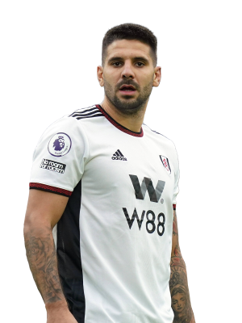
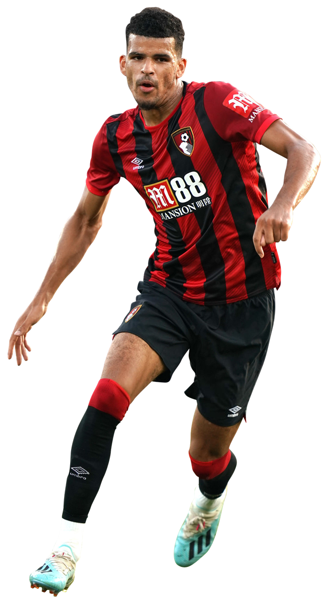

Expected points per gameweek - 7.70
Expected points per million - 0.64
Of course the best striker is Erling Haaland, at this point there isn't much more we can say about him, he's super human.
Touchline rating 10/10
Expected points per gameweek - 5.78
Expected points per million - 0.50
Harry Kane is the second best striker and the player with second highest xp in the whole of FPL, making him an excellent choice. A paiting of Kane and Haaland up front will be mighty, especially now Harry Kane appears to have left his injury niggles in the past.
Touchline rating 10/10

Expected points per gameweek - 5.03
Expected points per million - 0.73
Mighty Mitro is our third best striker, and with an xp above 5 it's obvious why.
Touchline rating 10/10
Expected points per gameweek - 5.03
Expected points per million - 0.73
Yes that's right, along withbeing the third best forward, Mitrovic is the best value forward, to the point where here at Touchline FPL we can't suggest your forward combination to be anything other than Haaland, Kane and Mitrovic. But what if you can't afford that and need some cheaper forwards?
Touchline rating 10/10
Expected points per gameweek - 4.95
Expected points per million - 0.66
Ivan Toney could be a good option. Being the center of everything good at Brentford he's been in great form and looks like he'll continue in that fashion. Toney definitely deserves his place as the second best value forward.
Touchline rating 8/10

Expected points per gameweek - 3.38
Expected points per million - 0.59
You may have noticed that there aren't really many cheap forwards that are doing well this season. However, one that is playing well (but not brilliantly) is Dominic Solanke, so if you need a cheap third striker after spending your money in midfield then Solanke is who I'd suggest.
Touchline rating 5/10